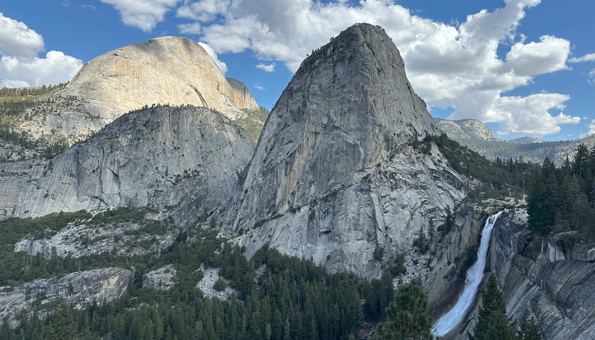

About Me
I am an environmental engineer with over a decade of experience, and I specialize in the design of wastewater treatment systems for industrial clients. I've had the privilege of contributing to the compliance and sustainability of numerous municipal and industrial clients via wastewater treatment systems design, a field that demands a seamless integration of multiple engineering disciplines.
Developing comprehensive systems that effectively manage and treat wastewater and thereby transform challenges into opportunities for business sustainability and excellence is what excites me most. The joy I find in my work comes from the collaborative process of designing and implementing these systems, ensuring they meet the specific needs of each client. My commitment to this field is driven by a deep-seated belief in responsible stewardship of our natural resources, and I continuously seek to apply innovative technologies and methods to further this cause while never losing sight of clients' business needs.